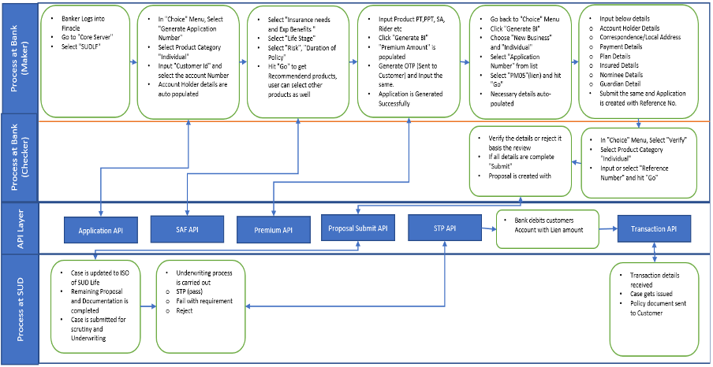

SUD LF (SUD Life Finacle Menu) is an integrated solution developed by SUD Life
Insurance for Union Bank of India to enable seamless sourcing, premium calculation,
lien marking, and policy initiation directly from CBS. The new improved menu makes
the processing easier for the bankers by introducing Pre-Filled Forms and Suitability
Analysis.
About PPHI
PPHI regulations mandate the implementation of Bima-ASBA, which protects policyholders by
blocking premium funds in their bank accounts via UPI instead of requiring upfront payment.
Under these rules, insurers can only debit the blocked amount after the policy is officially
issued, and if an underwriting decision is not made within 14 days, the "lien" or block must
be automatically released.
📘 TRAINING VIDEOS – Please watch these before using the SUD LF menu
SUD LF – End-to-End Process Training
This training video explains the complete flow from customer selection to policy initiation.
SUD LF – Lien Marking & Debit Flow Training
This training video focuses on lien marking, debit flow, and transaction confirmation.
Customer Details & Validation
Ans. Person who will pay for the policy or the Proposer’s account number to be input.
In case, Insured is different from the account holder, then Insured details to be input in “Insured Details section”. Ensure correctness of the information as premium calculation shall happen on the Name, DOB and Gender of the Insured.
Ans. If the customer’s mobile number is not correctly mapped to their Cust_ID, the system will not allow further processing. The customer must ensure that their mobile number is updated with the bank to enable authentication, communication, and transactionrelated activities.
Ans. Any customer detail that differs from the information available in CBS (Core Banking System)—such as date of birth, name, address, income, etc.—must be rectified directly with the bank. Premium computation relies on accurate CBS data, so incorrect information must be updated promptly.
Ans. Any error in the Standard Age Proof indicator (Yes/No) will need to be corrected in DQ (Data Quality). However, it is always preferable to ensure that this detail is correctly captured at the initial stage to avoid later iterations.
Ans. When the Proposer and Life Assured are different individuals, the OTP will be sent to the Proposer, who is also the Account Holder.
Maker–Checker & Modification Controls
Ans. Any authorized bank employee can act as a maker or a checker. However, the same individual cannot perform both roles on the same application or transaction. The bank will internally decide and assign maker–checker responsibilities based on its operational guidelines.
Ans. No, the verifier cannot modify details. Only the maker has the authority to make corrections. If any information is incorrect, the verifier must reject the form, after which the maker can update and resubmit it.
Ans. In “Choice” menu there are 4- Modify / 5 - Cancel option can be used to modify or cancel a transaction respectively. It is related to New Business only.
Products & Sourcing
Ans. The name of the new menu is SUDLF. Same is available in the Menu Shortcut
Ans. All retail products. List as mentioned below:
Product Name
Product Code
Saral Jeevan Bima
T35
Simple Term Plan
T51
Smart Healthcare
H01
Saral Pension
I05
Century Gold
T45
Century Income
T47
Century Royale
T38
Retirement Royale
U21
Wealth Creator
U18
Wealth Builder
U15
E-wealth Royale
U19
Star Tulip
U24
Smart Guaranteed Pension Plan
T52
Pension Plus
U25
Samriddhi
T23
Guarantee Royale
T50
POS- Sud Life Sanchay
T24
Century Plus
T29
Guaranteed Money Back Plan
T33
Century Star
T36
Fortune Royale
T43
Aadarsh
T21
Centurion
T48
Fortune Plus
T55
Smart Term Plan
T53
Ans. Yes, currently POS policies can be sourced from this menu and currently the Credit Life Policies cannot be sourced from this menu.
Ans. This will be available in all existing CBS of UBI branches.
Premium Calculation & Policy Issuance
Ans. Yes, currently premium calculation is enabled in this menu, after the product is selected and its details are filled like Policy Term (PT), Premium Paying Term (PPT), Mode and Plan Option etc. the Premium is Calculated.
Ans. Manual coordination with sales personnel is no longer required. Premium calculation is now fully integrated, allowing users to generate accurate quotes directly within the system via the 'Premium Details' tab.
Ans. New business premium for all retail policies can be collected.
Ans. Application number will reflect in the screen on submission of the transaction this can be shared with the customer. The customer can call the SUD life call centre for a status update.
Ans. The Sales office of SUD life will contact the customer and take all information that is necessary for issuance of the policy. They will update the customer on the status of the policy.
Account Debit, Lien & Flow
Ans. Customer ID and Account Number is chosen in the “Choice” menu at the start will be marked for lien. Same shall be debited.

Ans. The Salesperson of SUD life would get update about the lien marking in his Digi Quick application maximum by 30 minutes.
Ans. The generation and transmission of periodic flat files to SUD Life will be discontinued under the new process.
Cheques, Sundry Accounts & Exceptions
Ans. Cheques issued from another bank must be deposited into the customer’s existing account. These cheques will follow normal clearing timelines and are considered noncollectible until cleared.
Ans. No, only customer account can be debited.
Employer–Employee & Lien Issues
Ans. In employer–employee cases, lien marking may not process because physical forms required for this setup are not available on DQ. The current process continues as per the existing workflow.
Ans. If the lien amount is not updated by the Underwriter and does not flow to the CA system, the Underwriter and the Sales team can complete the process manually using the designated link.
Account holder name issue (same as nominee):
If there is a mismatch in the account holder’s name, it must be modified in DQ to ensure proper validation.
General Information
Ans. No, document is required to be collected from the customer, the sales officer will connect and do the required due diligence.
Ans. All the options listed—such as New Business, Modify, Verify, Generate Application Number, and Cancel—are available and functional at this stage of the process.